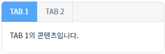
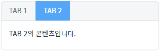
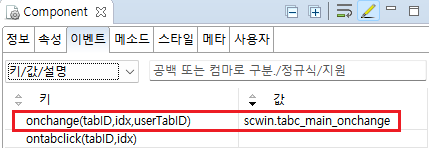

TabControl의 'onchange' 이벤트를 설정한 예제입니다. 이 이벤트는 선택된 탭이 변경된 경우 발생하는 이벤트입니다.
이벤트 핸들러에서 다음의 값을 확인할 수 있습니다.
tabID: 변경된 탭의 엔진 내부에서 사용하는 ID
idx: 변경된 탭의 Index
userTabID: 변경된 탭의 사용자가 지정한 ID(addTab API 사용한 경우 옵션 값 중 ID값에 해당)
선택된 탭 변경 시 'onchange' 이벤트를 활용해 탭 정보를 확인한다.
1
STEP 1: 초기 상태를 확인합니다.
TabControl에 탭 'TAB1', 'TAB2'가 구성되어 있고, 'TAB1'이 선택된 상태입니다.
Image 1.브라우저(Chrome) 실행 예시

2
STEP 2: 'TAB 2'를 클릭해 선택된 탭을 변경합니다.
'onchange'는 선택된 탭이 변경되어야 발생하는 이벤트이기 때문에 원래 선택된 탭이 아닌 다른 탭을 선택해야합니다.
Image 2.브라우저(Chrome) 실행 예시

3
STEP 3: 로그 영역에서 결과를 확인합니다.
탭이 변경 될 때 아래 형태로 로그를 출력합니다.
Example 1.Log
[22:27:51] mf_tabc_main_tab_tabs2 - 1 - tabs2
1
STEP 1: TabControl의 이벤트를 설정합니다.
'onchange' 이벤트에 메소드를 설정하고 설정한 메소드를 정의합니다.
Image 3.웹스퀘어 스튜디오의 Component View - 이벤트 예시

Example 2.Script
// TabControl의 onchange 이벤트 핸들러 scwin.tabc_main_onchange = function (tabID, idx, userTabID) { // 로그 출력 var strLog = tabID + " - " + idx + " - "+ userTabID; console.log(strLog); };
Example 3.Source
<w2:tabControl id="tabc_main" ev:onchange="scwin.tabc_main_onchange"> <!-- 중략 --> </w2:tabControl>
onchange(tabId, idx, userTabId)